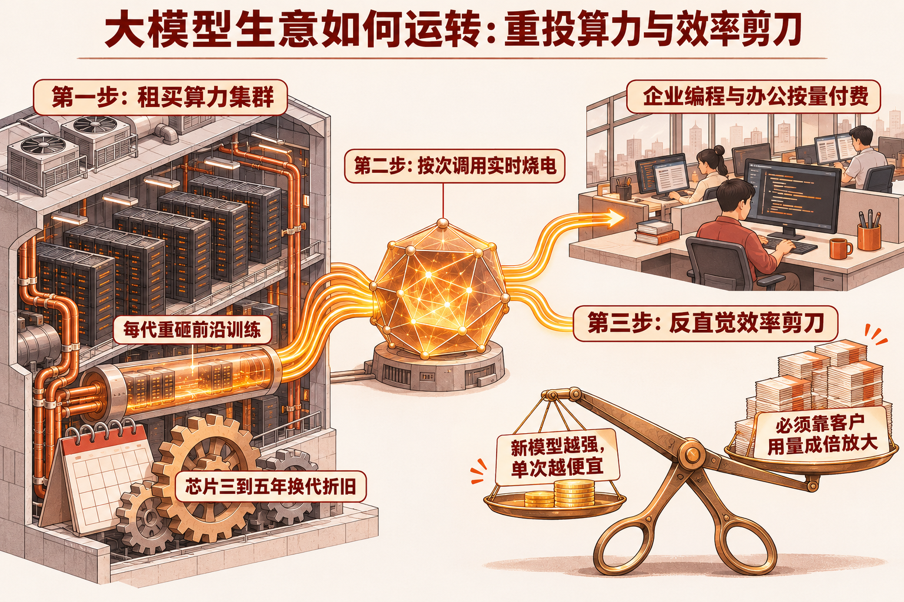
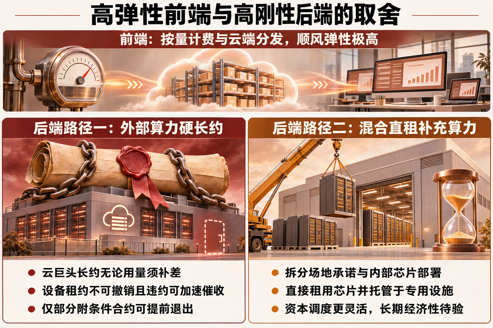

行业怎么运作
不是零边际成本的传统软件，而是隔代重砸训练、按次烧电交付、越强越便宜的重算力服务
翻开财报与估值尺子前，先把行业底层脾气钉死：产品属性、算力折旧周期与反直觉的代际降价剪刀，决定了高增长为什么不自动等于高利润。

- 先破传统软件直觉：卖的不是买断拷贝，而是按次计费的智力算力。 传统软件一次研发、边际复制成本近乎为零；大模型每响应一次编程、问答或接口调用，机房都须实时通电运行推理算力，变动成本随用量同步发生。
- 重资产与短折旧叠加：训练投入隔代保级，芯片三到五年换代。 供给侧须提前租买庞大算力集群投入前沿训练；竞争对手追平后，下一代模型须重新砸钱训练才能保住一线位置，叠加专用算力芯片三到五年的换代折旧，资本开支与更新账单难以停手。
- 反直觉“效率剪刀”：产品越强，单次任务收费反而大降。 多数行业产品升级伴随提价，大模型恰恰相反——模型能力跃升与推理效率优化，会把同一任务的客户账单大幅拉低，收入扩张必须靠调用量成倍放大来对冲。
招股书管理层讨论直接给出了换代降本的一手实证：「For example, with the release of Fable 5.1 in September 2026, we reduced the cost of typical workloads by approximately 25% compared to Fable 5, with savings of up to 45% for complex coding and highly agentic tasks. Similarly, with the release of Opus 5.5 that same month, we reduced customers’ cost per task by approximately 40% compared to Opus 5. In each case, the reduction was a combination of a lower price and improved efficiency, the contributions of which depend on the task.」
2026 年 9 月发布新版本后，Fable 5.1 处理典型负载的客户成本较 Fable 5 降约 25%，复杂编码与高度代理任务最高降 45%；同月 Opus 5.5 较 Opus 5 每任务降约 40%，且降幅系降价与效率提升共同作用、占比视任务而定。这组数字把行业剪刀摆上台面：单价越跑越低，模型商若拉不动客户用量成倍扩盘，高增速就会反被新一轮训练费吃掉。具体到财报里的收入爬坡、毛利率与研发算力拆解，详见财报之根·收入从哪来与今天赚不赚钱。
谁在场内分钱
价值在产业链四方之间切分，真正决定终局利润的是走成“操作系统”还是沦为“发电厂”
把钱从终端企业往上游追，AI 创造的价值至少经过四方分账：客户自己留走大头（否则没有部署动力），封装工作流与界面的应用层抽走产品集成费，掌握云端入口与机房硬件的云厂商和芯片算力商收走通道费与租金，最后剩下的净留存才归模型商。
模型商这一层分成三股力量：自带云生态与既有流量的科技巨头、专注前沿能力的独立模型商，以及持续拉低价格地板的开源模型与追赶者。2026 年前三季，Anthropic 约 44% 的收入仍经云厂商市场卖出——云巨头既是核心分销渠道，也是同场竞争对手。同期大客户集中度极高，截至 2026 年 9 月末滚动四季，年收入达 10 万美元以上的客户已逾 11,900 家，跨过更高两档大型门槛的分别逾 1,900 家与约 250 家，格局定位读数见下表。
| 维度 | 读数 | 单位 | 性质与条款边界 |
|---|---|---|---|
| 按量计费占比（滚动四季） | 79.3 | % | 事实；按实际调用量确认收入，波动随客户用量放大或收缩 |
| 订阅计费占比（滚动四季） | 20.7 | % | 事实；含企业席位与个人固定月费订阅，通常按不超过十二个月服务期确认 |
| 经云厂商市场销售占比（2026 年前三季） | 44 | % | 事实（公司约数）；2025 全年为 47%；经云市场成交按主责方总额法确认，通道费另计 |
| 年收入十万美元以上大客户数 | 11,900 | 家 | 事实（招股书“逾”）；截至 2026 年 9 月末滚动四季口径，高档包含在低档内 |
| 年收入百万美元以上大客户数 | 1,900 | 家 | 事实（招股书“逾”）；截至 2026 年 9 月末滚动四季口径 |
| 年收入千万美元以上大客户数 | 250 | 家 | 事实（招股书“约”）；截至 2026 年 9 月末滚动四季口径 |
| 剩余履约义务（2026 年 9 月末） | 138 | 亿美元 | 事实；其中预计未来十二个月确认占 75%，不等于全周期续约率 |
| Fable 5.1 较 Fable 5 降本 | 25 | % | 事实（公司约数）；默认设置典型负载成本降幅，复杂编码与高度代理任务最高降 45% |
| Opus 5.5 较 Opus 5 降本 | 40 | % | 事实（公司约数）；每任务成本降幅，系下调定价与效率提升共同作用 |
| 谷歌云最低消费承诺 | 1,213 | 亿美元 | 事实（公司“至少约”）；无论实际用量须补足差额，不可取消并可触发信贷交叉违约 |
| 亚马逊云最低消费承诺 | 1,100 | 亿美元 | 事实（公司“至少”）；无论实际用量须补足差额，仅留特定调整与重大违约例外 |
| 微软云算力承诺区间 | 472–492 | 亿美元 | 事实；写明无论实际用量须支付，除未补救重大违约外不可取消 |
| 博通五年设备融资租赁 | 1,612 | 亿美元 | 事实（公司“约”，不含息）；不可撤销且付款义务绝对无条件，违约可立即催收约定损失值 |
| SpaceXAI 算力承诺上限 | 1,205 | 亿美元 | 事实（公司“最高”，至 2029 年）；初始不可撤销期满后任一方可提前九十天书面取消 |
生意与格局定位表：全部数值引用冻结底表键，覆盖计费结构、云渠道、大客户分层、剩余履约义务、代际降本与主要算力长约边界。
行业盘子做大，不等于场内公司就能留住厚利。研究方法里有一条硬边界：「如果没有壁垒，量的空间无法转化为利润的空间，量的空间就会大幅贬值。」
历史上的电力与光纤已演过同一场戏：它们将人类经济蛋糕放大数倍，但一旦供给同质、客户随时可换，发电厂与管道商最终只赚薄薄一层加工费，超额价值流向消费者与终端平台。回到大模型赛道，这构成全篇核心博弈与待探索空间：
- 走成“操作系统”：工作流深度绑定锁住定价权。 若企业把代码库、审批链、权限与业务流深度嵌进单一模型，迁移摩擦拉高，模型商才能在换代降价时留住老客并成倍扩量。
- 沦为“发电厂”：多模型比价打薄模型层利润。 现实中已有大型企业主动规避单一绑定——如沃尔玛内部开发工具同时接入多个模型，按任务随时切换。一旦前沿能力趋近，客户随时比价换线，价格战会直接挤压利润率。
- 待探索空间（护城河尚未证成）： 公开资料目前缺少换代后同批客户的任务量、实现单价与续约队列交叉表。Anthropic 最终站稳“操作系统”还是滑向“发电厂”，眼下无法拍板，须待上市后客户队列数据核验。
Anthropic 的生意模式
前端按量计费与云端分发弹性极高，后端压着退不掉的算力硬长约，另以混合算力计划提升资本调度弹性
放回前两节的行业棋盘，Anthropic 选的是一台“前端高度弹性、后端高度刚性”的商业机器。拆开收入侧、供给侧与自建路线，能一眼看清这套模式拿什么换什么：

- 收入侧按量主导、大客扩量极猛，但高留存读数带明确口径边界。 截至 2026 年 9 月末的滚动四季，按量计费占总收入 79.3%、订阅占 20.7%，2026 年前三季经云厂商市场卖出约 44%。同期净收入留存约 900%，但须先核定义原句：「A Qualified Customer is a customer with at least $1 of revenue during the Base Period, excluding subscribers to our Claude Pro, Max, and Ultra plans, whose fixed-price subscriptions do not reflect the expansion and contraction behavior this metric is intended to capture.」该口径剔除了固定月费个人订阅客户，也未拆客户分位数与流失率，只证明合格按量与企业客户过去一年剧烈扩量，不等同于长期锁死；同期剩余履约义务 138 亿美元中约 75% 预计十二个月内确认，仅反映近一年订单能见度。
- 供给侧长约并非铁板一块，但核心硬骨头没有便宜退路。 算力与租赁总承诺达 9,009 亿美元，其中约 1,862 亿美元写明附条件或可提前终止（如 SpaceXAI 至 2029 年最高 1,205 亿美元安排，初始不可撤销期后可提前九十天书面取消，但截至 2026-11-21 无正式取消公告）；扣掉有条件部分，硬承诺余额仍有 7,147 亿美元。谷歌云至少约 1,213 亿、亚马逊云至少 1,100 亿、微软云 472–492 亿协议均约定无论实际用量须补足差额；全部博通相关五年设备融资租赁不含息合计约 1,612 亿美元，不可撤销且违约触发约定损失值加速催收；部分核心商业合同违约还可能联动银行信贷与可转债交叉违约。
- 补充路线（Anthropic Direct）拆开场地与芯片承诺，但不改变算力换代约束。 招股书披露了作为额外算力来源的混合计划 Anthropic Direct，包含直接租用芯片并托管于代运营专用设施，旨在将数据中心场地承诺与内部算力部署拆开，以提升资本使用弹性。但该计划仍属补充布局，不替代已签死的外部云长约，且三到五年算力换代的底层支出压力仍在，长期经济性尚待验证。
- 顺风与逆风劈叉。 需求狂飙时按量收费迅速拉升收入，一旦增速放缓或价格战打响，后端硬合同难以同步收缩。七类承诺期限拆分、现金桥与 2030 年流动性条件压测，详见财报之根·账上现金与算力合同与叙事之果·算力付款与股东现金。
口径与条款备忘：主要算力长约、交叉违约与自建计划的招股书及合同原句
三大云长约无视用量补差原句。谷歌与亚马逊：「If our actual spend falls short, we must pay Google the difference as a true-up subject to certain adjustments and exceptions if available. Our commitments under such agreement are non-cancelable except in the event of Google’s uncured material breach.」；「If our actual spend falls short, we must pay Amazon the difference as a true-up subject to certain adjustments and exceptions if available. Our commitment under such agreement is non-cancelable except in the event of Amazon’s uncured material breach.」微软：「Our commitment under such agreement is non-cancelable except in the event of Microsoft’s uncured material breach or, on a per-tranche basis, for certain undelivered tranches.」
SpaceXAI 提前九十天书面取消原句。「Following initial non-cancelable periods ending in January 2027 and March 2027 under the respective agreements, each agreement may be cancelled by either party upon 90 days’ advance written notice.」初始不可撤销期分别止于 2027 年 1 月与 3 月，截至 2026-11-21 无正式取消公告。
博通主租约不可撤销与加速催收原句。「Each Lease shall, subject to the terms of this Master Agreement, be non-cancelable by Lessee and Lessor.」；「LESSEE’S OBLIGATION TO PAY ALL RENT AND OTHER AMOUNTS WHEN DUE AND TO OTHERWISE PERFORM AS REQUIRED UNDER THIS MASTER AGREEMENT, ANY SCHEDULE OR ANY OTHER TRANSACTION DOCUMENT BETWEEN LESSEE AND LESSOR SHALL BE ABSOLUTE AND UNCONDITIONAL」；「immediately due and payable as a pre-estimate of liquidated damages for loss of bargain and not as a penalty, the Stipulated Loss Value of the Equipment in lieu of any further Rent」须注意，1,612 亿美元系全部博通相关五年设备融资租赁不含息合计（含受让方），勿与单一租约混用。
商业合同交叉违约原句。「In particular, a default under certain commercial agreements could trigger cross-default provisions under the A&R Credit Agreement (as defined below) and certain of our outstanding convertible promissory notes, potentially resulting in the acceleration of substantially all of our outstanding, and any future, indebtedness.」
Anthropic Direct 混合计划原句。「We refer to this additional source of compute as Anthropic Direct, which helps to address our scaling compute requirements and we believe will provide long-term economic advantages. Anthropic Direct represents a more flexible use of capital by allowing us to separate our commitments for data center capacity from our commitments for the compute infrastructure deployed inside them.」该计划属招股书披露方向，长期经济性待落地检验。
研究前提与认知标记
全篇七块承重地基的性质分类与推翻开关，以及四条最易看偏的直觉误判
下面七条标记按可推翻难度分三类：技术与合同约束 是技术机制、会计结构与白纸黑字合同写死的硬约束，最难改变；历史归纳 取自过往基础设施或科技巨头样本，换环境可能失效；研究假设 是研究者在未知处押下的关键参数与情景，也是全篇最要盯紧的脆弱点。
已授及未归属股票已按完全稀释计入今日市值，未来新授作为费用扣在净利润，占比压不下时砍的是终局净利率，不在利润可分配比例中重复扣第二次。
三大云长约无视用量补差，博通租约不可撤销且违约触发约定损失值加速催收，部分核心商业合同违约还可能联动信贷交叉违约；Anthropic Direct 混合算力计划虽拆分场地与芯片承诺，但不替代已签长约，长期经济性尚待落地检验。
电力与光纤放大社会蛋糕但供给方仅赚薄利；模型每代降价 30%–40% 后，若不能靠工作流锁住老客让任务量扩至 1.43–1.67 倍，利润就会流失（待探索空间：发电厂 vs 护城河）。
2019–2023 年谷歌（95%）与 Meta（99%）五年合计自由现金占净利润比例，构成行业趋稳时现金转化的外部样本。
可分配比例取 0.9 依托十年后算力投入趋稳假设；尺子与门槛统一按 10% 设定，其余档位在后文作敏感度对照。
上述终局由 2036 年演绎收入粗乘利润率得出（2024 年工资美元、未跑成本模型）；基准模型以全球白领 23.1 万亿美元旧工资池为起点，新产业增量单列为待探索空间。
2024 年工资美元等于假定工资到 2036 年共十二年不涨，与当前名义市值存在通胀口径差；名义换算按近两年工资年增 3.35% 外推十二年（推算），用于对照水位漂移。
| 常见误判 | 更贴近生意的读法 | 对应本页哪一节 |
|---|---|---|
| 把 810 亿美元运行率当已落袋年收入 | 运行率仅是近二十八天按量流水乘十三加月订阅乘十二的估算速度，如同黄金周单日流水直接乘全年天数，不等同于会计确认收入。 | 第三节 · 前端弹性与财报之根 |
| 被 −1,208.97 亿美元净亏吓跑，或轻信 23.60 亿美元调整后盈利 | 巨亏大头是上市前可转债与衍生工具公允价值重估 −1,085.25 亿美元（不花现金）；调整后盈利则靠加回 38.29 亿美元员工股票，剥开两头主业仍未站稳正利润。 | 第一节 · 重投特征与财报之根 |
| 以为算力硬合同赔笔小违约金就能退，或拿 2,014 亿现金直接减市值 | 三大云长约写死无论用量须补差，博通租约不可撤销且违约可加速催收，部分核心商业合同违约还可能触发交叉违约；到 2030 年底预计发生 4,516 亿美元压在前头，现金留多少须看后续季报。 | 第三节 · 供给侧硬账单 |
| 以为“AI 蛋糕变大几倍，模型商利润就稳涨几倍” | 混淆社会总价值放大与模型层留存壁垒；缺少锁客壁垒时，量的爆发会被同质降价与高额保级训练费吞掉。 | 第二节 · 四方分钱与护城河之问 |
本表沉淀大模型行业与 Anthropic 模式中最易踩偏的四处误判；单期科目明细与完整现金桥分别归入“财报之根”与“数据底表与口径”。
算清的账、两大待探索空间与复查节点
算清的账。2026-11-19 首日收盘完全稀释市值、发行后推算可用现金底数、核心算力长约刚性条款、员工股票“两刀切界”及全球白领 23.1 万亿美元旧工资池六关连乘，均已对齐底表口径。
待探索空间一（蛋糕放大盲区）。基准模型衡量旧白领工资池内的替代与工时等价增产；若新产业掀翻旧池子，十年内仍受当前全球名义国内生产总值 111.7 万亿美元尺度与电力、芯片、监管及支付能力等慢变量制约，且目前财报无新用途收入披露。
待探索空间二（发电厂 vs 操作系统）。能否靠工作流锁住大客户避免沦为薄利发电厂，缺换代后同批客户量价与续约队列交叉表，留待上市后财报核验。
复查节点。锁定上市后首份季报（日期待公布），重点对照季度收入增速、垂直行业收入披露、可用现金消耗速度及员工股票与训练开支占比；完整清单见叙事之果·什么会推翻。
至此，行业机制、四方分钱、公司模式与七块前提地基已摊清。接下来进入定量验真：先去财报之根核实收入、盈亏与硬账单，再去估值之茎反算现价押了多大的未来，最后到叙事之果走完六关连乘与反方核对，全部原始序列收于数据底表与口径。